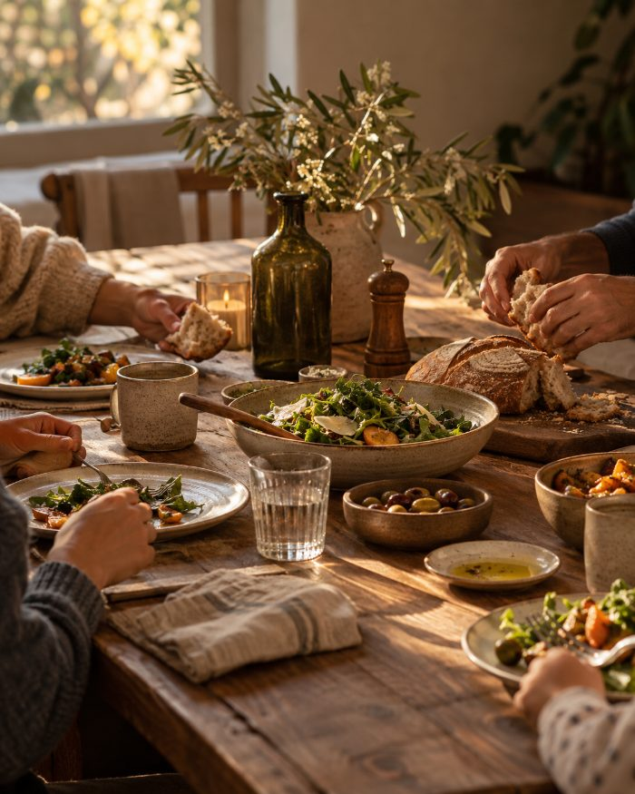

{{ streak }}-day streak{{ goalText }}


Scripture · Stoics · Modern wisdom
Find the wisdom. Put it into practice. Remember what matters.
Short, sourced insights from Scripture, the Stoics and the books you trust, each with one thing to do today.
{{ secLabel }}
{{ mq.title }}
{{ mq.sub }}
How should we handle sources?
Every card is labeled Scripture, Christian interpretation, Stoic philosophy or Modern practice. Nothing gets blended.
{{ sq.title }}
How much do you agree?
{{ sq.noteH }}
{{ sq.noteB }}
DisagreeAgree
Which shelves do you want?
Pick at least 2. You can change these anytime.
What are you facing right now?
Optional. We’ll surface wisdom for these first.
Start with this source?
{{ bk.counter }} · Yes adds it to your shelf.
{{ bk.key }}
{{ bk.author }}
{{ bk.blurb }}
How much each day?
Small and steady beats big and rare.
Shaping your plan
around what you’re facing
{{ br.label }}{{ br.mark }}
“Plans succeed through good counsel”
Proverbs 20:18, NLT · Quotation
Your plan
{{ readyText }}
{{ plan.rhythm }}
Focus
Help for
From your shelf
How it works
{{ hw }}
{{ dateLabel }}{{ streakLabel }}
{{ greeting }}
{{ heroTitle }}
New to Fig?
Read, practice one action, save what matters, and Fig brings it back so it sticks. Here’s how it works in two minutes.
{{ planEyebrow }}
{{ planTitle }}
{{ planDayTitle }}{{ planDayNote }}
{{ goalTitle }}{{ actionsText }}
{{ goalText }}
Revisit
{{ dueTitle }}
{{ dueSub }}
What are you facing?
{{ feedNote }}
{{ it.shLabel }}{{ it.trLabel }}{{ it.meta }}
{{ it.title }}
{{ it.sum }}
Today{{ it.act }}
{{ it.src }} · {{ it.ref }}
Discover
{{ dTitle }}{{ dCount }}
{{ it.shLabel }}{{ it.trLabel }}{{ it.meta }}
{{ it.title }}
{{ it.sum }}
Today{{ it.act }}
{{ it.src }} · {{ it.ref }}
Guided plans
What are you facing?
Shelves
Sources
Decision Room
Bring a real decision. Leave with one wise next step.
We’ll walk through five steps: clarify, examine, challenge, act, review. About 4 minutes.
Fig offers wisdom for reflection, not professional advice. For medical, mental health, legal or financial decisions, talk with a qualified professional. If you’re in crisis, call or text 988 (US) or your local emergency number.
{{ decisionsLabel }}
{{ dc.title }}{{ dc.date }} · {{ dc.status }}
“{{ dr.text }}”
{{ ds.label }}
{{ drPrompt }}
{{ sm.k }}{{ sm.v }}
After you act, come back and note whether the action changed your need. Mark it reviewed under Recent decisions.
Wisdom for this decision
{{ pr.shLabel }}{{ pr.trLabel }}{{ pr.title }}{{ pr.sum }}{{ pr.src }} · {{ pr.ref }}
Ask Fig
Ask about what you’re facing. Get answers from Scripture and the Stoics.
Fig answers from your library and shows every card it draws on.
{{ chatSuggestLabel }}
You asked
{{ m.text }}
Fig
{{ p.text }}
Try today{{ p.text }}
Drawn from
Offline answer from your library. Live answers need Fig’s AI connection.
Fig is thinking…
{{ chatQuota }}
Fig offers wisdom for reflection, not professional advice. For medical, mental health, legal or financial decisions, talk with a qualified professional. If you’re in crisis, call or text 988 (US) or your local emergency number.
Library
Revisit
{{ dueTitle }}
Answer a quick recall question for each saved insight. Remembered ones come back in a week; fuzzy ones tomorrow.
Coming back
Save an insight and it comes back here as a quick recall question.
Nothing saved yet. Tap the bookmark on any insight.
Your own cards appear here and in your feed, with the same action, reflection and recall as the built-in ones.
No entries yet. After you try an action, record what happened.
{{ je.date }}{{ je.ideaTitle }}
{{ jl.k }}{{ jl.v }}
{{ initials }}{{ since }}
{{ streak }}day streakBest: {{ best }}
{{ st.v }}{{ st.k }}
Sources
Every card stays labeled Scripture, Christian interpretation, Stoic philosophy or Modern practice. Quotations, summaries and applications are marked separately.
Scripture quotations are taken from the Holy Bible, New Living Translation, copyright © 1996, 2004, 2015 by Tyndale House Foundation. Used by permission of Tyndale House Publishers, Carol Stream, Illinois 60188. All rights reserved.
About this advice
Fig offers wisdom for reflection, not professional advice. For medical, mental health, legal or financial decisions, talk with a qualified professional. If you’re in crisis, call or text 988 (US) or your local emergency number. Answers in Ask Fig and the Decision Room are generated by AI and can be wrong; check them against the source cards and your own judgment.
Daily goal
Appearance
Your data
Everything is saved on this device only. Export a backup now and then, and before you switch devices.
{{ rc.counter }}
Recall · {{ rc.shLabel }}
{{ rc.rc }}
{{ rc.title }}
{{ rc.sum }}
{{ rc.src }} · {{ rc.ref }}
Nice work.
{{ rc.result }}
Journal entry
Linked insight · {{ jc.ideaTitle }}
{{ jf.label }}
{{ sheet.meta }}
{{ sheet.title }}
{{ sheet.desc }}
How Fig works
Find the wisdom. Put it into practice. Remember what matters.
{{ g.n }}
{{ g.h }}
{{ g.b }}
{{ icTitle }}
One principle, one real situation, one action for today. Only paste exact quotations you’re allowed to use. Needs a core idea, context and action.
Shelf
Source type
{{ fd.label }}
Situations
{{ r.counter }}
{{ r.shLabel }}{{ r.trLabel }}{{ r.mins }} min
{{ r.title }}
{{ r.author }} · {{ r.src }}
“
{{ r.q }}
{{ r.qref }}
{{ r.sumLabel }}
{{ r.sum }}
Where you might meet this
{{ r.app }}
{{ r.doneLabel }}
{{ r.act }}
Reflect
{{ r.rf }}
How the traditions differ
{{ r.cmp }}
Connected wisdom
Source
{{ r.src }}
{{ r.author }} · {{ r.ref }}